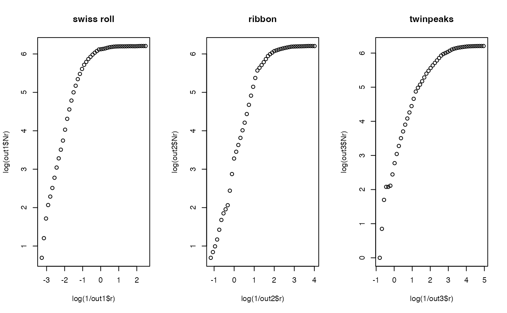

Box-counting dimension, also known as Minkowski-Bouligand dimension, is a popular way of figuring out the fractal dimension of a set in a Euclidean space. Its idea is to measure the number of boxes required to cover the set repeatedly by decreasing the length of each side of a box. It is defined as $$dim(S) = \lim \frac{\log N(r)}{\log (1/r)}$$ as \(r\rightarrow 0\), where \(N(r)\) is the number of boxes counted to cover a given set for each corresponding \(r\).
est.boxcount(X, nlevel = 50, cut = c(0.1, 0.9))
| X | an \((n\times p)\) matrix or data frame whose rows are observations. |
|---|---|
| nlevel | the number of |
| cut | a vector of ratios for computing estimated dimension in \((0,1)\). |
a named list containing containing
estimated dimension using cut ratios.
a vector of radius used.
a vector of boxes counted for each corresponding r.
Even though we could use arbitrary cut to compute estimated dimension, it is also possible to
use visual inspection. According to the theory, if the function returns an output, we can plot
plot(log(1/output$r),log(output$Nr)) and use the linear slope in the middle as desired dimension of data.
The least value for radius \(r\) must have non-degenerate counts, while the maximal value should be the
maximum distance among all pairs of data points across all coordinates. nlevel controls the number of interim points
in a log-equidistant manner.
Hentschel HGE, Procaccia I (1983-sep). “The Infinite Number of Generalized Dimensions of Fractals and Strange Attractors.” Physica DNonlinear Phenomena, 8, 435--444.
Ott E (2002). Chaos in Dynamical Systems, 2nd ed edition. Cambridge University Press, Cambridge, U.K. ; New York. ISBN 978-0-521-81196-5 978-0-521-01084-9.
Kisung You
# \donttest{ ## generate three different dataset X1 = aux.gensamples(dname="swiss") X2 = aux.gensamples(dname="ribbon") X3 = aux.gensamples(dname="twinpeaks") ## compute boxcount dimension out1 = est.boxcount(X1) out2 = est.boxcount(X2) out3 = est.boxcount(X3) ## visually verify : all should have approximate slope of 2. opar <- par(no.readonly=TRUE) par(mfrow=c(1,3)) plot(log(1/out1$r), log(out1$Nr), main="swiss roll") plot(log(1/out2$r), log(out2$Nr), main="ribbon") plot(log(1/out3$r), log(out3$Nr), main="twinpeaks")